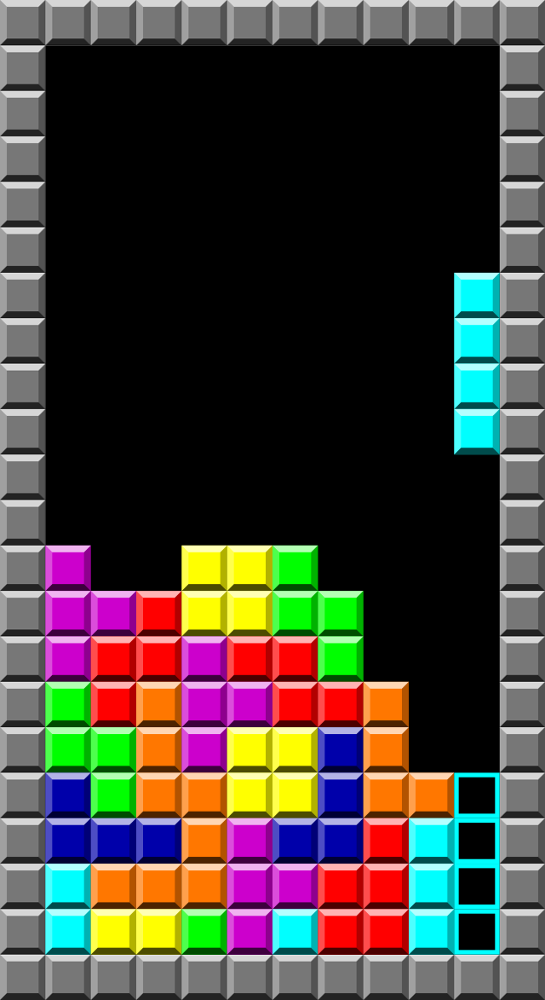

Index
Pong was the first game developed by Atari and one of the oldest games, which are popular throughout the world.
Pong is a two-dimensional game, which simulates table tennis. Every player controls a rectangle on the left or right side of the screen, which can move vertically. Players use the paddles to hit forth and back. If the ball reaches the end of the display, the side whereas ball comes from gets the point and the loser-side gets a free-kick.
In early 1972 Allan Alcorn (founder of Pong) commissioned his employees to create a Ping-Pong for programming exercise purposes. Later Ping-Pong made so much fun, that Nolan Bunshell (founder of Atari) decided to launch the game. As tech company Megenafox knew of the launch of Pong, they started a lawsuit against Atari. Megnafox won it and Atari's had to pay $700.000. It was not a problem for Atari, because they sold above 8000 pong arcade coins.
1974 Atari launched its pong console. At the beginning the console had little popularity, but it was completely successful at the christmas market. The Pong-console was successful until the beginning of the 80s.
On the release of the Atari 2600 1977, Pong gets numerous variants.
2012, on the occasion of 40th birthday of Pong, Atari released a new version of pong, which was developed by independece developer.
Tetris has a field of play, where different geometric forms (tetrominos) fall from the top of the field. The player can let the tetromino fall faster, rotate 90° right or left and let it fall to right, left or center.
Tetris is a puzzle video game created in the USSR (Union of Socialist Soviet Republics). Alexy Pajtnoc wanted to recreate the game pentomies, but he made a game of random pieces which the player will turn to fill the rows. Pajtnov named the game Tetris, a word from the combination tetra. The first playable version has been launched on the June 6, 1984.
1986 Tetris was published by the hungarian publisher Novotrade. The game was very successful and spread quickly to whole East-Europe. Without a sign of the Soviet Union, the rights of Tetris were sold to Microsoft and Spectrum Holobyte.
Microsoft released their first version of Tetris on November 1987, the Spectrum Holobyte version was released it on 1988. Both versions of the game was for the IHM PC. Later Tetris was ported on platforms including the Amiga, Atari ST, ZX Spectrum, Commodore 64 and Amstrad CD.
In 1988 japanese rights were sold to Bullet Proof Software's. Inc and Atari Games.
On June 1989 Nintendo and Atari Games began legal battle. The Judge decided in favor of Nintendo and therewith against Atari. On the next day Atari withdrew its NES version from sale.
Pajitnov and Henk Rogers founded The Tetris Company in June 1996 to manage on all rights on all platforms. After the dissolution of the Soviet Union, it becomes a private company. In 2002 the Tetris Holding was founded and removes all unlicensed clones from the market.
December 2005, Electronic Arts bought a company, which managed the Tetris license on mobile platforms. Following from this, Electronic Arts owns the rights of Tetris on the mobile market.
Minesweeper has a field in a form of a square. The field is with blocks, which have differently three types. The first is the hidden type. If the player click on this field, it is possible that this field is a mine or a normal field. The second type is the normal field. They are either empty or marked the numbers of mines in their near. The third type of field is the mine. If the player clicks on a mine, the game ends and all fields will be uncovered.
The players has one life and one free click. The first click of the player is a free click, this means when it clicks on a mine, it will not end the game.
Minesweeper was developed for Windows 3.1 and is available for every successor. From Windows on 8 it is downloadable in the Windows Store. In Windows Vista Minesweeper was revised. For example, it is possible to replace the mines with flowers. Minesweeper was also integrated on the mobil phone Siemens S25.